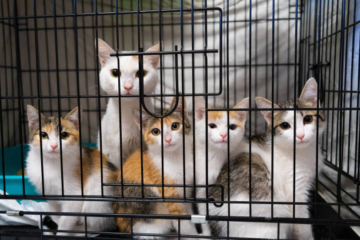

About Cat Adoption Center
Our Mission
Our mission is to provide a safe and loving environment for cats in need of homes.
Our Story
We started our cat adoption center in 2010 with the goal of rescuing and rehoming cats from shelters and the streets. Over the years, we have helped thousands of cats find their forever homes.

Meet Our Team
- Jane - Founder and Director
- John - Veterinarian
- Emily - Adoption Coordinator
How did we improve the shelter services through the years?
- Implemented better medical care for the cats.
- Created more spacious and comfortable living areas.
- Established partnerships with local veterinarians for regular check-ups.
- Organized community events to raise awareness about cat adoption.